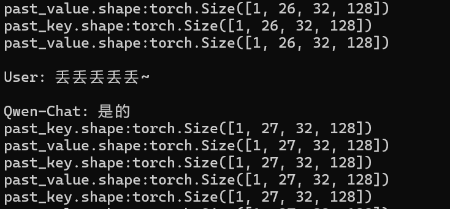

DailyRecord-May
5.1 —— 5.5
5.1 五一假期的第一天。再说一遍：我恨调休！我恨调休！
昨天晚上21：46的火车，早上6：35火车到站。只有站票，我和LT带了马扎上去，结果发现能放马扎的地方也很少。在4月中旬的时候，我和LT说一起回家，聊到站票买马扎的事情，我说我买两个，他不用买直接过来就行，结果他忘了自己也买了一个。于是多出了个小马扎。我是14车，LT是15车，他在15车帮我占了个位置，结果发现是厕所门口，而这个厕所的门还坏了，乘务员过来修反而把门直接给搞下来了；中途，LT试图将多余的马扎以15R推销出去，结果失败了🤣🤣🤣🤣。
每节车厢都带个厕所，因而站票大抵是都要在厕所附近窝着的我是不想当老八的，正好听闻说餐车那边有空位，因而我拎着我的两个小马扎过去找位子。到那儿发现餐车坐满了，估计都是站票过来买饭送座位的。餐车的尽头比较空旷，只有一个哥们儿在地上铺了个纸躺着。我在这儿蹲了下来，LT怕被赶走，让我看看情况，半小时没人赶就叫他。确实没人赶，然后他就过来了，过来一合计，吃点东西，然后去问有没有空位。乘务员腾了两个相邻的位子给我们，然后96r，没得选择，两人吃鱼香肉丝饭。我吃了一碗半，LT吃了两碗半。吃完后，可以名正言顺的占用餐桌。
由于跨月，因而碧蓝航线要刷一下大世界的剩余体力，玩手机到1点，LT默默陪着我一起玩，我放下手机趴下他也趴下了。说实在话，虽然有坐，但是不安静，乘务员嘈杂，他们不关心你是不是在睡觉；尤其是2点多乘务员集体早餐，我们那个位置需要暂时让一下给乘务员吃饭，吃完饭一般立刻就走了，但是有不走的留在桌子上、东百口音的男的在吹牛逼，不压低声音。总而言之，到4、5点的时候，我们也只睡了质量很低的断断续续的2小时左右。然后到了开早饭的时候，被乘务员撵走了，我们到了餐车末尾的地方蹲了一小时，又被撵走了。
总之，6.35到车站，然后LT他妈妈开车来带我们，把我送到家。妈妈在家等我，我洗了个澡，然后七点多开始睡觉，一下睡到中午12.30。然后去门市吃午饭，牛肉啥的，家常菜。啊！家的味道！
下午，LSH叫我出去上网，我们把LT叫上了。线上叫了道哥，以及我的研究生同门SH，凑了五黑，大大乱斗。下午两点打到8点，十几把输了两把，爽赢！网吧有茶水售卖，喝了红茶。
然后，我骑的自行车留在了网吧门口，LT开车带我、LSH、SXZ一起去步行街吃龙虾。喝啤酒、吃下酒菜，倾诉一下，聊聊在北京一个月的一些经历和感想。啤酒喝晕了，他们驾着我打车去浙江商城那儿的KTV唱歌。我真不知道自己是怎么过去的，只知道自己被人驾着。到那儿，躺到了0：30，醒了，唱歌到2点，走路回家睡觉。
和朋友们喝酒是开心的、唱歌是开心的。
5.2 五一假期第二天。中午去我爹那儿吃午饭。我的大爷、我爸的新对象和那个女儿也来了，喝了点啤酒，聊了聊一些烦恼。但是在这里接收到的只有“努力！拼搏！”一类的大道理、大男子/大家长主义的说教。挫败，再次决定不应该向这里倾诉一些东西了，在母亲那儿更放松一点。但这个家族氛围就是这样，总体上还是和睦的、较好的，一些东西应该学会去忍受。
下午，依旧昨天的配置、昨天的阵容，今天点了枸杞菊花茶，因为感觉这个好像是明目的，最近感觉视力有所下降。一开始连跪，沉默不语，然后连胜了，最后打到18点多，光荣下播！
骑着自行车到门市吃饭捏，家的味道！*2🥰🥰
5.3 五一假期的第三天。中午去我爹那儿吃饭，下午还是和他们一起去网吧。晚上去门市吃饭，之后去了舅爹舅奶家。看了看菜地、菜地边上舅爹晒太阳的破沙发。我妈看生菜长得好要了点回去。之后，在地下室的屋子里面坐着聊天，临走时，我把装在信封里面的、从银行取出来的新钱2k给了舅爹舅奶，实习工资的一部分，很有纪念意义。感到舅爹舅奶有点手足无措、又有点失落。
5.4 五一假期第四天。中午去门市吃饭，然后在家里躺了一会儿。下雨了，NZY告诉我他在初中部那儿和初中老师吃饭。LT开车去带了他，还带来了HL。我们一起在网吧打了一两盘，他们就都走了。HL感觉没啥精气神儿了，这班上的。NZY也好像有点心事，感觉他不像以前那样开心了。晚上，到门市吃饭，和妈妈一起回家。
5.5 今天回百京。下雨，早起坐上去宿迁的车，大概9点到高铁站。13点多到百京，点了个东北铁盒饭外卖，到出租屋的时候吃。下午和SH打了大乱斗，一直输。在出租屋没事干，混日子呗。
家里真舒服啊！真舒服啊！
5.6
复工。查看五一期间跑的训练怎么样了。发现训练没跑完，然后vscode远程sshA800也连不上了，但是bash可以连。百思不得其解。终于发现原因是保存的checkpoint文件太多、把硬盘填满了（本来剩下几百G）。测试checkpoint的效果，正常问答和指令问答效果都很差。看样子需要重新斟酌。需要仔细选取数据，进行调整。或者直接放弃改底层模型，因为这导致训好的模型被利用的很差。
此外，加载模型时候有这个提示：
1 | Some weights of the model checkpoint at output_qwen/checkpoint-2000 were not used when initializing QWenLMHeadModel: ['transformer.h.0.attn.bias', 'transformer.h.1.attn.bias', 'transformer.h.10.attn.bias', 'transformer.h.11.attn.bias', 'transformer.h.12.attn.bias', 'transformer.h.13.attn.bias', 'transformer.h.14.attn.bias', 'transformer.h.15.attn.bias', 'transformer.h.16.attn.bias', 'transformer.h.17.attn.bias', 'transformer.h.18.attn.bias', 'transformer.h.19.attn.bias', 'transformer.h.2.attn.bias', 'transformer.h.20.attn.bias', 'transformer.h.21.attn.bias', 'transformer.h.22.attn.bias', 'transformer.h.23.attn.bias', 'transformer.h.24.attn.bias', 'transformer.h.25.attn.bias', 'transformer.h.26.attn.bias', 'transformer.h.27.attn.bias', 'transformer.h.28.attn.bias', 'transformer.h.29.attn.bias', 'transformer.h.3.attn.bias', 'transformer.h.30.attn.bias', 'transformer.h.31.attn.bias', 'transformer.h.4.attn.bias', 'transformer.h.5.attn.bias', 'transformer.h.6.attn.bias', 'transformer.h.7.attn.bias', 'transformer.h.8.attn.bias', 'transformer.h.9.attn.bias'] |
attention的bias和我后面新加的beta参数，没有从模型中加载到。为什么？bias这个好像不影响。但是beta是核心参数，没了直接乱说一气。
开发大哥那边需求连接服务器，需要服务器接上wifi，同时能够连接A800。本以为是个改路由的大工程，但是没想到直接接入网络就行了。也许是接入网络先后顺序的问题？搞不懂。
改了infini里面的结构，本来是融合后在projection，我把projection放前面了。因为我不想动这个projection的参数，只想训练融合的参数信息。不知道结果会怎样。如果后融合的话，projection的参数也要变，模型本身能力直接寄。
晚上，开了例会。前辈哥给出了问题的可能解决方法，明天需要测试一下：
- 检查checkpoint目录下的config.json、modeling_qwen.py文件是否与预期一致
- super().init(config) 移到最后，检查是否是继承类的初始化问题
此外，对于c_proj是否需要调整位置的问题，建议还是先不调整试试，一般影响不大。
晚上，和LT、SH一起大乱斗，赢！
- 明日任务：测试解决方案是否可行
5.7
测试昨晚商讨的解决方案。无效果。
尝试打印模型结构和参数，结果显示attn已经修改，且模型参数里面有beta：

没办法，上不去下不来，卡在这儿了😅
看了一下相关的issue，似乎是加载模型的问题，好像要改from_pretrained。
来自ZYR的场外支援！开了个腾讯会议，排查了两小时，确定是from_pretrain的问题！我到这不知道该怎么办，他给出了另一种加载模型的方式：
1 | from transformers import AutoConfig |
在此之前，需要将safetensor逐个转化为ckpt文件：
1 | from safetensors.torch import load_file |
将safetensor转化成ckpt，然后加载。加载的比from_pretrain慢好多！但是问题解决了！我必须立刻去研究一下这个加载方式的原理！
真得给我朱哥磕一个吧，帮我太多了！
safetensor是安全的，也就是说为了确保安全性、不包含恶意代码之类的，就要限制其中的东西，因而不让改动，也可以理解。 我定位到了问题，但没能解决的原因，在于对权重文件及其加载了解不深入，实际上这对我是傻瓜式的操作、黑箱。
晚上没有战斗，混日子捏……感觉不到啥拼搏的动力，浑浑噩噩月光族也是活着……
- 明日任务：测试训练好模型的效果
5.8
昨天的代码，默认是在cpu上加载模型的，需要改成如下格式
1 | device = torch.device("cuda") |
对话效果烂了。我决定照着原论文的结构来复现，再训练一遍，看看到底怎么回事。
看了过程中tensor的shape，似乎之前的代码shape不对？也许效果不好的原因就在于此。改了之后再跑训练看看效果叭！
趁着训练的时候，查看ckpt和safetensor的区别。ckpt这种文件似乎是torch的官方保存方式，以dict形式存储torch.nn.module的模型结构及其对应的参数，在加载的时候使用torch.load加载。这个过程是很直观简单的。（正常训练结束的文件，好像应该是.pt或者.pth？）
以下内容来自网络：
- .ckpt文件是Pytorch Lightning框架中使用的模型文件格式之一。Pytorch Lightning是一个基于Pytorch的轻量级深度学习框架，它提供了更简单和更高层次的API，用于训练和管理深度学习模型。.ckpt文件保存了模型的参数和优化器的状态，并且通常还包含训练的元数据信息。
- .pth文件是Pytorch中最常见的模型文件格式之一。它是一个二进制文件，包含了模型的参数和状态。.pth文件保存了模型的权重和各层的参数，可以方便地用于加载和恢复模型。通过保存模型为.pth文件，我们可以在需要时重新加载模型，并使用它进行预测或继续训练。
也就是说，pth是base，ckpt是进阶，safetensor是再进阶？知乎上这篇解释safetensor还不错。
看了一些讲解，了解到，不同类型的模型、训练方法会自定义save和load的方法，文件名之类的也有差别，这种要具体情况具体分析。
修改模型之后，重新训练，结果还是像以前那样，只能回答第一句话，后面的话无了。其原因在哪儿？需要print以下tensor的情况是否存在之类的。目前的猜想是：首先，不可能是训练数据只有单轮对话的原因，因为这无非是输入长短的问题，不应该是一点输出都没有。在多轮对话中，一点结果都不返回的话，说明第二轮及以后的decode都是<!i’m end>这种东西；这个问题的原因，可能在于魔改模型烂了，M和z对后续输出造成了很坏的负面应用，这个方法不通；也有可能是ft的方法、量级不对。亦或者，一个原因是M和z使用、更新的顺序出问题，导致后续decode无法进行之类的。因而，目前首先需要print所有decode的结果，而非对话
输入之后，print出make_context中raw_context的结果，发现decode的结果是直接无了。思考这个现象出现的原因，应该是魔改模型+ft导致模型本身的能力被破坏殆尽；训练数据中都是单轮对话的数据，因而无法decode出多轮对话的结果，它输入进去的都只是一个system+user的对话，过拟合导致只能输出一轮对话的结果，后面直接decode成end了。
这个猜想的可能性是很大的。目前，不能确定自己魔改的代码在思路上是没有问题的，因而：
- 可能需要再仔细斟酌一下代码修改，需要查看这个decode过程中的tensor(句子、M、z)；
- 也有可能代码没问题，纯因为这个方法需就是烂，水出来的；
- 也有可能是需要大量数据喂进去才能看到效果。
- 也有可能，是safetensor向ckpt转化过程中损失了参数；因为似乎ckpt to safetensor是可以无损的，而反过来不行，因为safetensor是一种压缩、精简的格式；
查看M和z在forward过程中的数值更新：
查看M和z的具体数字后，发现其过大，没收敛在一个固定范围内😡。但是、似乎、好像、Attn的结果，是M和z除；因而Attn不会受到太大影响才对？
感觉脑子不够用了，一天能认真思考的时间好短捏。思考多了头晕。（tmd不是因为我节食了营养这一块儿没人给我补吧？）
好吧，确定一下思路：修正M和z的更新公式，使得其稳定，需要参考另一个论文实现的开源项目，这个项目适配了llama和Gemma，应该是好的。
- 明日任务：修正M和z的更新公式，力求将其限定在一定范围内波动，避免数值溢出。
5.9
查看上面说的开源项目llama版本的改动，发现其在初始化阶段只初始化了beta，且beta是一个和MHA的shape相匹配的tensor而非单独的数值。这样，每个头有一个参数，似乎更加符合论文中的做法：
1 | self.gate = nn.Parameter(torch.full((1, self.num_heads, 1, 1), 0.0)) |
modeling的代码中有past_kv，查看这个tensor是否存在、shape是否合理；按理来说这个应该是自增的。

确实是随着token的逐步decode递增的，第二个维度是query_len，输入+prompt大差不差是这个数。
又回顾了M和z的具体数值，发现主要是z过大，那么最简单的方法就是对z做norm，但是这个操作没出现在论文中，最好还是再分析一下代码是否有问题。
再去看一下论文：
原来z只是归一化的分母，它就应该是大的，无所谓；但是M不应该是大的，这个问题出现的原因，可能是代码实现中没有关注 “element-wise” 这个操作
修改完之后，再次训练，预计下班后能训好。这次训练查看效果，还是重点关注两方面的内容：
- 对话是否正常
- 如果对话不正常，则查看M和z，尤其是M，需要控制其在一定范围内
M为什么会突发性的过大？这个M的公式上看，增量更新应该没问题，也许是代码写的不对？
查看代码，感觉没什么问题，再仔细看一会儿，真没问题那就没办法了。
训练中断，加载checkpoints-1000的参数看看能否多轮对话，似乎有多轮对话的能力；但是没有看M和z的具体数值。又改了代码。把beta改成了shape为[1, 1, self.num_heads, 1]的tensor，再次训练，看看效果。预计明天看看今天训的两个模型的效果和M、z的具体数值。
- 明日任务：查看两次修改的ft效果，明确是否是数据量不足的原因；思考限制M和z范围的方法；
5.10
昨晚跑一半服务器断了，今早发现连不上服务器了，ssh也不行。
静观其变，相机而动！
继续看一下streaming-llm的论文和源代码，这个项目的star涨的好快，现在已经有6.2k了，看样子很有可取之处。这个论文的核心思想还是sparse attention机制，只不过是在观察了attention logits的数值分布特征之后，提出的针对这个特征的sparse方案。
另：win11上配置ssh server的教程，就是nm几mb的东西为什么安装的那么慢？而且还安装失败？————好吧，似乎是梯子的问题，把梯子关了之后正常安装了。和pip换清华源之后不能开梯子install有异曲同工之妙。
streaming-llm对positio embedding也做了调整，感觉如果改qwen1的话会很麻烦，因为它的代码不明晰。
分析一下streaming-llm种modify_llama.py文件的思路：
1 | def apply_rotary_pos_emb_single(x, cos, sin, position_ids): |
这个函数的作用，顾名思义是进行RoPE；而“single”的意义在于，指定位置进行RoPE，而不是一整个raw context。这个函数的作用正好和论文中的 “根据cache进行位置编码” 相对应。通过这个函数，可以自由选定、构建token组进行RoPE。
我也查看了qwen1中的RoPE，应该就是这样，没有问题。
下午nm给拉出去干杂活，说明天早起去那儿打下手现在去踩点😅，挤在出租车上有点晕；然后nm到中关村会议中心那儿啥事儿没干，蹲了一会儿出去找饭吃，吃了31的大盘鸡拌面，味道一般，比不上南京一根；然后吃一半打电话来说不用再回去了直接回家😅😅😅😅😅，纯dirty work了属于是。实习生牛马忍气吞声ing。
- 明日任务：当杂活、群演、牛马😅😅